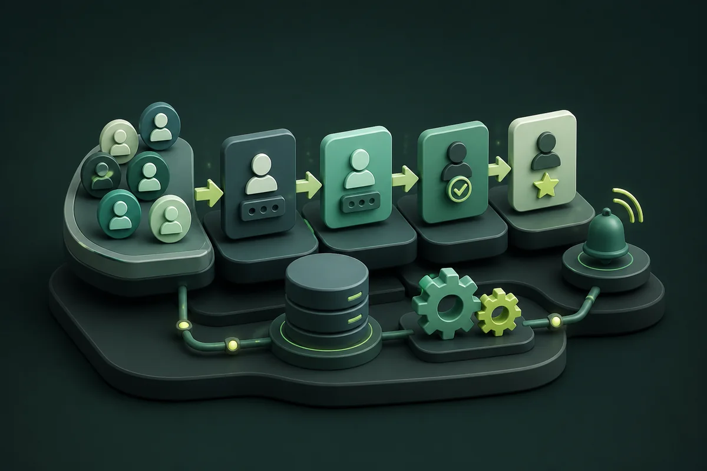

Google Workspace para OSCs
Organização de documentos, formulários, calendários, comunicação e colaboração em um ambiente integrado.
Solicitar diagnósticoFormações, consultorias e implantações adaptadas à realidade de cada organização.
6 soluções disponíveis • 6 no total
Organização de documentos, formulários, calendários, comunicação e colaboração em um ambiente integrado.
Solicitar diagnóstico
Estruturação de cadastros, fluxos, respostas, acompanhamento e indicadores com Google Sheets e Apps Script.
Conhecer soluçãoPlanejamento de campanhas, identidade, conteúdo, canais digitais e relacionamento com públicos.
Propor projetoCapacitação, políticas de uso, prompts, automações e apoio à adoção responsável de inteligência artificial.
Solicitar formaçãoOficinas, experiências práticas e projetos educativos com programação, prototipagem e criatividade.
Conhecer propostaEstruturação e publicação de guias, materiais, modelos e recursos educativos acessíveis.
Explorar biblioteca